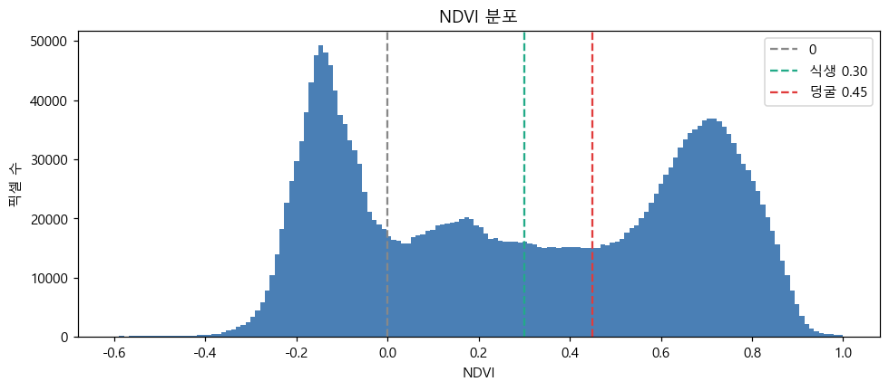
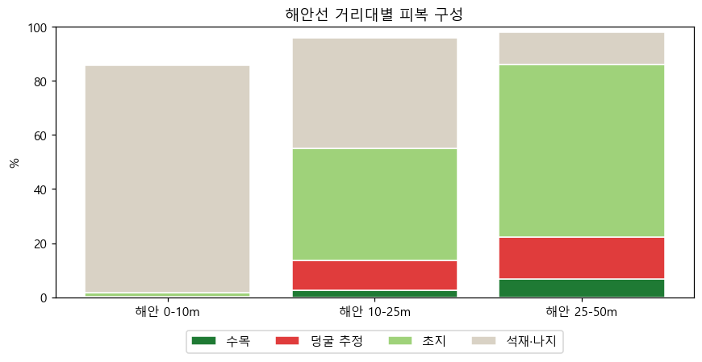
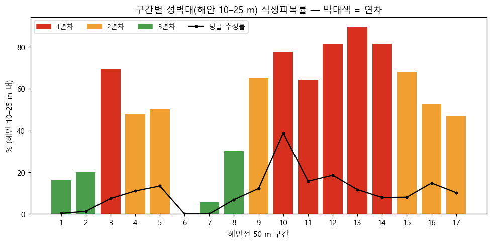

별도환해장성 M3M 항공조사 — ODM 처리·식생 분석 보고서
제주 화북 별도환해장성 · 촬영 2026-10-12 (DJI Mavic 3 Multispectral) · 처리 2026-10-16~17 (OpenDroneMap 3.6.2) · v2
0. 요약
- 처리 완료. RGB 1,651장과 멀티스펙트럴(MS) 6,604장으로 다음을 만들었습니다.
- 정사영상, 표면·지면 고도(DSM·DTM), 반사율 4밴드
- NDVI·NDRE·GNDVI, 식생 높이(CHM)
- 석재와 식생은 분명하게 구분됩니다. 아래 비교 뷰어에서 같은 장소의 RGB 사진과 NDVI·위색·분류·높이를 슬라이더로 겹쳐 볼 수 있습니다.
- 식생이 내륙에서 성벽 쪽으로 밀고 들어옵니다. 해안에서 멀어질수록 식생피복률이 높아집니다: 0–10 m 1.6% → 10–25 m(성벽대) 55.1% → 25–50 m 86.1%.
- 1년차 구간 3·10·11·12·13·14의 성벽대 평균은 식생 77.3%, 덩굴 16.7%입니다. 최우선은 구간 10(덩굴 추정 38.8%)입니다.
- 현재 통계는 해안선 기준 대리 분석입니다. 성벽 중심선을 QGIS에서 그리면(약 30분) 중심선 기준 0–1 / 1–3 / 3–10 m 정밀 통계를 바로 낼 수 있습니다. 구간 7처럼 대리선이 성벽을 벗어난 곳이 있어 꼭 필요합니다.
- 이번 자료는 1차 기준(baseline)입니다.
- 절대 위치가 RTK 기준으로 수평 약 0.8 m, 수직 약 3.6 m 평행 이동돼 있습니다.
- RGB와 MS의 상대 어긋남은 중앙값 0.20 m입니다.
1. 장소별 비교 뷰어
위쪽 버튼으로 장소를 고르고, 아래 버튼으로 오른쪽에 겹칠 분석 레이어를 고릅니다. 사진 위를 끌거나 슬라이더를 움직이면 왼쪽(RGB)과 오른쪽(분석)의 경계가 바뀝니다.
2. 사업 배경과 분석 목적
제주도 환해장성 17개소 문화재 돌봄사업 제안을 위한 자료입니다. 아래는 회의 녹취록에서 정리한 요구입니다.
| # | 회의에서 나온 요구 | 이 보고서의 대응 |
|---|---|---|
| ① | 성벽과 엽록소를 가진 식생의 구분, 한눈에 다른 색 | NDVI·근적외 기반 석재·초지·덩굴·수목 분류 (비교 뷰어 "석재·식생 분류") |
| ② | 성벽 중심과 양옆까지 함께 분석 | 해안선 거리대 0–10 / 10–25 / 25–50 m. 중심선 기준 0–1 / 1–3 / 3–10 m는 디지타이징 후 |
| ③ | 구간별 1·2·3년차 순환 관리계획 | 해안 50 m 구간 위험도 점수 → 연차 배분 (5장) |
| ④ | 관리 구역과 미관리 구역의 차이 | 중심선 레이어 managed 필드로 비교. 현재 관리 범위 정보 필요 |
| ⑤ | 기준점을 두어 이전·이후 비교 | 이번 = 1차 기준. cm급 비교는 RTK 재촬영부터 |
| ⑥ | 덩굴 추가 촬영 | 미실시. NDVI + 높이(CHM)로 대리 추정 |
핵심 위협은 덩굴·관목이 돌 사이에서 굵어지며 돌을 벌리는 것입니다. 가늘 때 3년 주기로 제거한다는 것이 사업 설계의 뼈대입니다.
3. 데이터와 처리
| 비행 | RGB | MS(4밴드) | 위치측위 | 특징 |
|---|---|---|---|---|
| 006 | 529 | 2,116 | 단독측위 | 연직, 고도 41 m |
| 007 | 611 | 2,444 | 단독측위 | 연직 |
| 008 | 426 | 1,704 | RTK Fixed | 연직 |
| 009 | 85 | 340 | RTK Fixed | 사선(−58~−15°), 돔 왜곡 방지 |
| 합계 | 1,651 | 6,604 | 단독측위 69% · RTK 31% | |
- RGB:
--gps-accuracy 1.5 --feature-quality high --min-num-features 12000 --pc-quality high --dsm --dtm --dem-resolution 5 --orthophoto-resolution 1.5 - MS:
--gps-accuracy 1.5 --radiometric-calibration camera+sun --feature-quality high --pc-quality high --dsm --dem-resolution 5 --orthophoto-resolution 2
처리 중 발견하고 해결한 문제
| 문제 | 원인 | 조치 |
|---|---|---|
| 데이터 로드 중단 | RGB 2장의 DJI MakerNote 빈 값 때문에 exifread가 오류를 냄 | 빈 값 건너뛰기 1줄 추가(원본 백업). 사진은 빠짐없이 사용 |
| GPU 미사용 | ODM 폴더의 nvcuda.dll이 20 KB 빈 껍데기라 실제 드라이버 대신 불러옴 | 이름 변경 → 깊이맵 분당 8장에서 377장으로 약 45배. 이미 만든 835장은 재활용 |
| 검은 현무암이 식생으로 오분류 | 암반의 적·근적외 반사율이 0.004 수준이라 NDVI 비율이 튐 | 식생 판정에 근적외 반사율 ≥ 0.012 조건 추가(풀밭 하위 10%가 0.027) |
| 카메라 위치 복원이 느림 | OpenSfM 증분 복원은 CPU 1코어 위주 | 정상 동작. 이 PC에서 --split은 순차 처리라 이득이 없음 |
4. 처리 품질
| 지표 | RGB | MS | 맥 자체 파이프라인(참고) |
|---|---|---|---|
| 카메라 복원 | 1,645 / 1,651 | 1,625 / 1,651 | 1,645 / 1,651 |
| 3D 점 (희소) | 1,528,710 | 703,529 | 985,868 |
| 재투영 오차 | 1.28 px | 1.32 px | 0.69 px |
| 정사영상 | 43,462 × 23,095 | 30,434 × 16,964 | 44,981 × 23,138 |
| 절대 위치 검증 기준 | 매수 | 수평 차 (중앙 / p90) | 수직 차 (중앙) |
|---|---|---|---|
| RTK Fixed 사진 (008·009) | 507 | 0.78 m / 0.83 m | −3.57 m |
| 단독측위 사진 (006·007) | 1,138 | 0.36 m / 0.54 m | +2.18 m |
RGB↔MS 상대 정합은 녹색 밴드 위상상관(10 cm 격자, 신뢰 타일 28개)으로 쟀습니다. 결과는 중앙 0.20 m, p90 0.30 m이고 방향성은 없습니다. 해안 10–25 m 분석에는 충분하지만, 중심선 기준 0–1 m 거리대에서는 경계 픽셀이 섞일 수 있습니다.

NDVI 분포. 식생 봉우리 0.6~0.8, 바다는 음수로 정상입니다.
반사율 절대값은 낮게 나왔습니다(풀밭 근적외 약 0.04). camera+sun 보정의 알려진 과소평가 특성이고, 보정판이 없으면 절대 반사율은 성립하지 않습니다. NDVI 같은 비율 지수는 유효해서 이번 분석에는 지장이 없습니다.
5. 해안 거리대별 식생 압력
바다(NDVI<0인 가장 큰 영역)의 경계를 해안선으로 자동 추출하고, 모든 육지 픽셀의 해안선까지 거리를 계산했습니다. 맥 보고서와 같은 기준으로 성벽은 10–25 m 대에 있다고 봅니다.
| 해안 거리 | 면적 m² | 식생 | 수목 | 덩굴 추정 | 석재·나지 | NDVI |
|---|---|---|---|---|---|---|
| 0–10 m | 9,417 | 1.6% | 0.0% | 0.1% | 84.3% | 0.05 |
| 10–25 m (성벽대) | 9,400 | 55.1% | 2.7% | 10.9% | 40.8% | 0.44 |
| 25–50 m | 15,258 | 86.1% | 6.8% | 15.4% | 11.9% | 0.59 |
0–10 m는 파도에 노출된 암반대라 식생이 거의 없습니다(석재·나지 84.3%). 성벽대부터 식생이 절반 이상을 덮고, 내륙은 86.1%입니다.

6. 구간별 위험도와 3년 순환 배분
해안선을 약 15 m 폭으로 부드럽게 다듬은 뒤 50 m씩 나누고, 서쪽에서 동쪽으로 17개 구간에 번호를 매겼습니다. 구간 위치는 비교 뷰어의 전체 범위 → 연차 배분 레이어에서 볼 수 있습니다.
위험도 = 0.5 × 성벽대 식생피복률 + 0.3 × 성벽대 덩굴 추정률 + 0.2 × 인접대(25–50 m) 식생피복률. 점수 상위 3분의 1은 1년차, 중위는 2년차, 하위는 3년차입니다.

구간별 성벽대 식생피복률(막대색 = 연차)과 덩굴 추정률(선)
| 구간 | 성벽대 면적 m² | 식생피복률 | 덩굴 추정 | 수목 | 인접대 식생 | 위험도 | 연차 |
|---|---|---|---|---|---|---|---|
| 10 | 216 | 77.6% | 38.8% | 0.4% | 100.0% | 0.705 | 1년차 |
| 13 | 631 | 89.7% | 11.7% | 1.1% | 99.9% | 0.683 | 1년차 |
| 12 | 785 | 81.4% | 18.6% | 8.6% | 96.9% | 0.656 | 1년차 |
| 14 | 643 | 81.5% | 7.9% | 0.8% | 97.9% | 0.627 | 1년차 |
| 3 | 437 | 69.5% | 7.4% | 0.1% | 99.5% | 0.569 | 1년차 |
| 11 | 895 | 64.2% | 15.7% | 1.3% | 99.8% | 0.568 | 1년차 |
| 9 | 465 | 64.9% | 12.2% | 0.5% | 94.2% | 0.550 | 2년차 |
| 15 | 433 | 68.1% | 8.0% | 1.4% | 66.6% | 0.498 | 2년차 |
| 4 | 622 | 47.8% | 11.0% | 1.6% | 99.7% | 0.471 | 2년차 |
| 5 | 1,104 | 50.0% | 13.4% | 1.2% | 87.4% | 0.465 | 2년차 |
| 16 | 682 | 52.5% | 14.8% | 7.0% | 64.4% | 0.436 | 2년차 |
| 17 | 280 | 46.9% | 10.2% | 3.6% | 70.6% | 0.406 | 2년차 |
| 8 | 751 | 30.1% | 6.8% | 5.0% | 89.6% | 0.350 | 3년차 |
| 2 | 292 | 20.0% | 1.2% | 1.9% | 99.5% | 0.303 | 3년차 |
| 1 | 660 | 16.2% | 0.3% | 1.4% | 51.4% | 0.184 | 3년차 |
| 7 | 268 | 5.5% | 0.0% | 0.0% | 78.3% | 0.184 | 3년차 |
| 6 | 122 | 0.0% | 0.0% | 0.0% | — | 0.000 | 3년차 |
- 1년차 구간 3·10·11·12·13·14 · 성벽대 3,606 m² · 평균 식생 77.3% · 덩굴 16.7%
- 2년차 구간 4·5·9·15·16·17 · 성벽대 3,586 m² · 평균 식생 55.0% · 덩굴 11.6%
- 3년차 구간 1·2·6·7·8 · 성벽대 2,093 m² · 평균 식생 14.4% · 덩굴 1.7%
제안. 덩굴 추정이 가장 높은 구간 10부터 현장에서 확인할 것을 권합니다. 3년차 구간 가운데 식생이 적은 곳에는 실제로 관리되는 곳도 있고, 대리선이 암반 위에 놓여 낮게 나온 곳(구간 7)도 있습니다. 발주처의 관리 범위와 중심선 재분석으로 구분해야 합니다.
7. 한계와 주의
- 성벽 중심선이 아닌 해안선 기준입니다. 맥에서 자동 추출을 3회 시도했지만, 현무암 암반과 성벽이 분광·형태로 갈라지지 않아 실패했습니다. 해안 암반이 넓은 곳은 10–25 m 대가 성벽을 벗어납니다(구간 7).
- 덩굴 추정은 대리 지표입니다. NDVI≥0.45이면서 높이 0.2–2 m인 곳을 덩굴로 봤으므로, 저수고 관목과 초본이 섞입니다. 돌담 위 식생은 담 높이가 더해져 수목으로 분류될 수 있습니다.
- 문턱값은 현장 검증 전 임시값입니다. 식생 0.30, 덩굴 0.45, 높이 2 m, 근적외 0.012입니다. 스크립트 인자로 조정할 수 있습니다.
- 반사율은 상대값입니다. 보정판을 촬영하지 않았습니다. 절대 위치는 4장 참고입니다.
- 남서쪽 마을은 비행 범위 가장자리라 정사영상이 번져 있어 분석에서 제외했습니다.
8. 다음 단계
- 성벽 중심선 그리기 (QGIS, 약 30분)
- QGIS 프로젝트의 "★ 성벽 중심선" 레이어에 중심선을 그립니다. 관리 중인 구간은
managed=1로 둡니다. - 그다음 중심선 기준 통계 스크립트를 50 m 구간으로 돌립니다.
- QGIS 프로젝트의 "★ 성벽 중심선" 레이어에 중심선을 그립니다. 관리 중인 구간은
- 관리 범위 정보 받기: 현 수행업체의 관리 구간을 발주처에서 받아 관리·미관리를 비교합니다.
- 본 촬영은 네트워크 RTK 연결:
--gps-accuracy 0.05로 처리하면 절대 위치 cm급, 5 cm 변위 비교가 가능합니다. 섞인 경우에는 사진별 정확도를geo.txt로 지정합니다. - 덩굴 전용 촬영: 1년차 구간을 저고도(15~20 m)와 사선으로 추가 촬영합니다.
- 보정판 촬영: 연도 간 반사율 비교가 필요하면 함께 찍습니다.